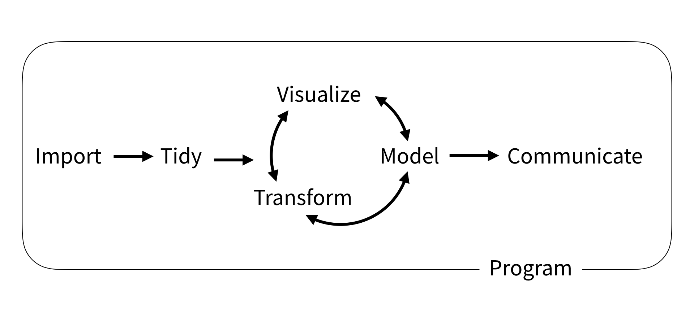
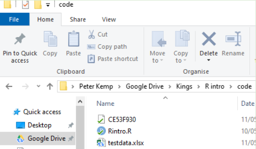
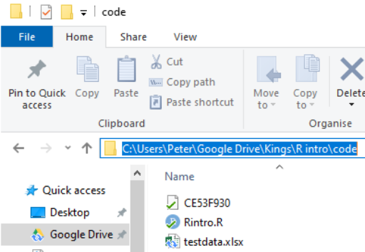
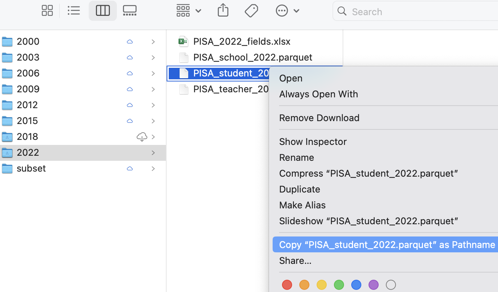
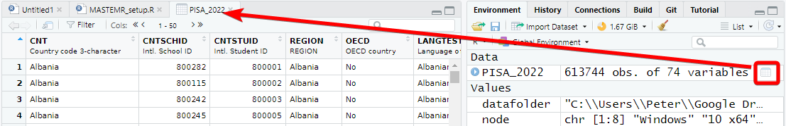
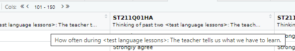
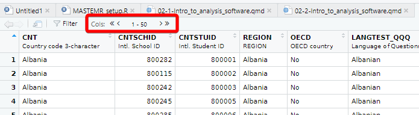
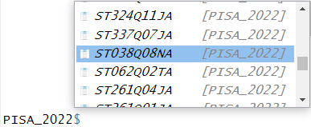

# A tibble: 5 × 4
CNT PV1MATH ESCS ST251Q01JA
<chr> <dbl> <dbl> <fct>
1 Albania 329. -1.10 Two
2 Albania 384. -1.93 None
3 Albania 438. -1.08 One
4 Albania 344. -0.0182 Three or more
5 Albania 376. -1.07 Three or moreLoading packages and exploring data
This course focuses on using the tidyverse; a free collection of programming packages that will allow you to write code that imports data, tidys it, transforms it into useful datasets, visualises findings, creates statistical models and communicates findings to others data using a standardised set of commands.

For many people the tidyverse is the main reason that they use R. The tidyverse is used widely in government, academia, NGOs and industry, notable examples include the Financial Times and the BBC. Code in the tidyverse can be (relatively) easily understood by others and you, when you come back to a project after several months.
Note
Try this out
The code above transforms data and converts it into a graph. It doesn’t have any comments, but you should hopefully be able to understand what a lot of the code does by just reading it. Can you guess what each line does? Try running the code by selecting parts of it and pressing control | command ⌘ and Enter
1 Loading data
We can’t do much with R without loading data from elsewhere. Data will come in many formats and R should be able to deal with all of them. Some of the datasets you access will be a few rows and columns; others, like the ones we are going to use on this course, might run into hundreds of thousands or even millions of rows and hundreds or thousands of columns. Depending on the format you are using, you might need to use specific packages. A few of the data file types you might meet are described below:
| File type | Description |
|---|---|
| Comma separated values [.csv] | As it says in the name, .csv files store data by separating data items with commas. They are a common way of transferring data and can be easily created and read by Excel, Google spreadsheets and text editors (in addition to R). CSVs aren’t compressed so will generally be larger than other file types. They don’t store information on the types of data stored in the file so you might find yourself having to specify that a date column is a date, rather than a string of text. You can read and write csv files without the need to load any packages, but if you do use readr you might find things go much faster. |
| Excel [.xls | .xlsx | .xlsxm] | Excel files store data in a compressed custom format. This means files will generally be smaller than CSVs and will also contain information on the types of data stored in different columns. R can read and write these files using the openxlsx package, but you can also use the tidyverse’s readxl for reading, and writexl for writing for excel formats. |
| R Data [.rds] | R has it’s own data format, .rds. Saving to this format means that you will make perfect copies of your R data, including data types and factors. When you load .rds files they will look exactly the same as when you saved them. Data can be highly compressed and it’s one of the fastest formats for getting data into R. You can read and write .rds files without the need to load any packages, but using the functions in readr might speed things up a bit. You won’t be able to look at .rds files in other programs such as Excel |
| Arrow [.parquet] | Apache Arrow .parquet is a relatively new format that allows for the transfer of files between different systems. Files are small and incredibly fast to load, whilst looking exactly the same as when you save them. The PISA dataset used here, that takes ~20 seconds to load in .rds format, will load in less than 2 seconds in .parquet format. Because of the way that data is stored you won’t be able to open these files in programs such as Excel. You will need the arrow package to read and write .parquet files. |
| SPSS [.sav] | SPSS is a common analysis tool in the world of social science. The native format for SPSS data is .sav. These files are compressed and include information on column labels and column datatypes. You will need either the haven or foreign packages to read data into R. Once you have loaded the .sav you will probably want to convert the data into a format that is more suitable for R, normally this will involve converting columns into factors. We cover factors in more detail below. |
| Stata [.dta] |
haven or foreign packages to read data into R |
| SAS [.sas] |
haven or foreign packages to read data into R |
| Structured Query Language [.sql] | a common format for data stored in large databases. Normally SQL code would be used to query these, you can use the tidyverse to help construct SQL this through the package dbplyr which will convert your tidyverse pipe code into SQL. R can be set up to communicate directly with databases using the DBI package. |
| JavaScript Object Notation [.json] |
.json is a popular format for sharing data on the web. You can use jsonlite and rjson to access this type of data |
For this course we will be looking at .csv, excel, .rds and parquet files.
2 Dataframes
Loading datasets into R will normally store them as dataframes (also known as tibbles when using the tidyverse). Dataframes are the equivalent of tables in a spreadsheet, with rows, columns and datatypes.
The table above has 4 columns, each column has a datatype, CNT is a character vector, PV1MATH is a double (numeric) vector, ESCS is a double (numeric) vector and ST251Q01JA is a factor. For more about datatypes, see ?@sec-datatypes
Dataframes are made from a collection of vectors, each column can be treated as if it was a vector, for example you can add one column to another:
# A tibble: 755,721 × 5
CNT PV1MATH PV1SCIE PV1READ overall_grade
<fct> <dbl> <dbl> <dbl> <dbl>
1 Albania 329. 290. 283. 902.
2 Albania 384. 416. 410. 1211.
3 Albania 438. 489. 423. 1350.
4 Albania 344. 326. 421. 1091.
5 Albania 376. 349. 332. 1057.
6 Albania 274. 238. 191. 703.
7 Albania 359. 335. 317. 1011.
8 Albania 285. 342. 340. 967.
9 Albania 315. 315. 246. 877.
10 Albania 457. 470. 451. 1378.
11 Albania 388. 303. 300. 991.
12 Albania 282. 293. 297. 872.
13 Albania 383. 449. 309. 1141.
14 Albania 281. 360. 295. 936.
15 Albania 382. 299. 267. 947.
16 Albania 378. 302. 286. 966.
17 Albania 339. 396. 352. 1087.
18 Albania 403. 367. 381. 1151.
19 Albania 485. 334. 347. 1167.
20 Albania 313. 264. 297. 874.
21 Albania 438. 486. 436. 1360.
22 Albania 229. 240. 300. 769.
23 Albania 350. 292. 250. 892.
24 Albania 368. 362. 317. 1047.
25 Albania 232. 197. 277. 706.
26 Albania 393. 331. 261. 985.
27 Albania 371. 298. 361. 1030.
28 Albania 343. 272. 269. 884.
29 Albania 486. 468. 356. 1310.
30 Albania 274. 311. 284. 869.
31 Albania 234. 223. 229. 686.
32 Albania 325. 295. 247. 867.
33 Albania 360. 375. 370. 1106.
34 Albania 376. 263. 382. 1022.
35 Albania 370. 375. 362. 1108.
36 Albania 298. 346. 309. 953.
37 Albania 421. 418. 405. 1244.
38 Albania 315. 311. 276. 902.
39 Albania 455. 359. 363. 1178.
40 Albania 418. 417. 419. 1254.
41 Albania 455. 396. 297. 1149.
42 Albania 353. 388. 312. 1053.
43 Albania 349. 333. 340. 1021.
44 Albania 345. 326. 300. 971.
45 Albania 390. 400. 331. 1121.
46 Albania 337. 326. 217. 880.
47 Albania 374. 370. 368. 1112.
48 Albania 479. 585. 536. 1601.
49 Albania 456. 489. 419. 1365.
50 Albania 278. 342. 268. 888.
51 Albania 418. 458. 379. 1256.
52 Albania 418. 391. 401. 1210.
53 Albania 441. 524. 548. 1513.
54 Albania 314. 401. 290. 1005.
55 Albania 346. 265. 320. 932.
56 Albania 478. 431. 349. 1258.
57 Albania 308. 394. 381. 1082.
58 Albania 401. 358. 446. 1204.
59 Albania 290. 315. 286. 891.
60 Albania 420. 421. 337. 1177.
61 Albania 398. 324. 301. 1024.
62 Albania 346. 358. 358. 1062.
63 Albania 270. 367. 337. 974.
64 Albania 408. 426. 391. 1225.
65 Albania 342. 338. 349. 1029.
66 Albania 333. 304. 262. 899.
67 Albania 220. 242. 291. 752.
68 Albania 456. 425. 410. 1291.
69 Albania 389. 334. 358. 1081.
70 Albania 362. 312. 299. 973.
71 Albania 294. 248. 146. 688.
72 Albania 454. 473. 423. 1350.
73 Albania 320. 399. 323. 1042.
74 Albania 365. 417. 374. 1156.
75 Albania 575. 522. 460. 1557.
76 Albania 516. 611. 454. 1581.
77 Albania 347. 266. 221. 834.
78 Albania 294. 229. 210. 732.
79 Albania 436. 338. 284. 1058.
80 Albania 363. 376. 297. 1036.
81 Albania 485. 454. 461. 1399.
82 Albania 502. 430. 390. 1321.
83 Albania 365. 364. 333. 1062.
84 Albania 432. 445. 349. 1226.
85 Albania 371. 366. 314. 1050.
86 Albania 420. 415. 362. 1196.
87 Albania 407. 423. 354. 1184.
88 Albania 452. 399. 287. 1138.
89 Albania 401. 325. 299. 1025.
90 Albania 398. 435. 294. 1128.
91 Albania 455. 381. 285. 1120.
92 Albania 399. 476. 343. 1218.
93 Albania 404. 423. 369. 1196.
94 Albania 472. 420. 421. 1313.
95 Albania 415. 433. 424. 1272.
96 Albania 591. 582. 578. 1752.
97 Albania 334. 361. 332. 1028.
98 Albania 484. 408. 328. 1220.
99 Albania 390. 321. 217. 928.
100 Albania 501. 445. 296. 1242.
101 Albania 479. 471. 387. 1337.
102 Albania 377. 340. 228. 944.
103 Albania 333. 359. 330. 1022.
104 Albania 390. 417. 321. 1128.
105 Albania 427. 462. 422. 1311.
106 Albania 396. 412. 384. 1191.
107 Albania 453. 419. 325. 1196.
108 Albania 441. 458. 378. 1277.
109 Albania 468. 484. 436. 1388.
110 Albania 394. 412. 384. 1190.
111 Albania 570. 559. 441. 1570.
112 Albania 498. 492. 433. 1422.
113 Albania 470. 361. 392. 1223.
114 Albania 375. 367. 347. 1090.
115 Albania 391. 457. 253. 1101.
116 Albania 473. 429. 391. 1293.
117 Albania 538. 515. 454. 1507.
118 Albania 454. 405. 341. 1200.
119 Albania 473. 423. 303. 1198.
120 Albania 372. 425. 381. 1178.
121 Albania 408. 412. 351. 1172.
122 Albania 500. 503. 414. 1416.
123 Albania 402. 438. 359. 1199.
124 Albania 426. 344. 264. 1034.
125 Albania 383. 396. 350. 1129.
126 Albania 426. 469. 406. 1301.
127 Albania 467. 411. 342. 1220.
128 Albania 381. 382. 348. 1111.
129 Albania 493. 317. 328. 1137.
130 Albania 408. 493. 489. 1390.
131 Albania 461. 497. 473. 1431.
132 Albania 387. 427. 409. 1223.
133 Albania 494. 468. 468. 1431.
134 Albania 548. 449. 425. 1422.
135 Albania 307. 326. 348. 981.
136 Albania 356. 340. 356. 1051.
137 Albania 600. 571. 514. 1684.
138 Albania 391. 424. 309. 1124.
139 Albania 409. 463. 489. 1361.
140 Albania 517. 496. 533. 1546.
141 Albania 374. 425. 330. 1129.
142 Albania 375. 399. 403. 1177.
143 Albania 484. 542. 483. 1508.
144 Albania 518. 512. 382. 1412.
145 Albania 498. 376. 443. 1317.
146 Albania 543. 531. 478. 1552.
147 Albania 421. 397. 414. 1232.
148 Albania 419. 398. 390. 1207.
149 Albania 276. 282. 297. 855.
150 Albania 428. 378. 401. 1207.
151 Albania 423. 480. 448. 1351.
152 Albania 524. 519. 424. 1467.
153 Albania 395. 387. 368. 1151.
154 Albania 486. 376. 369. 1231.
155 Albania 366. 399. 388. 1153.
156 Albania 426. 424. 333. 1183.
157 Albania 362. 404. 361. 1127.
158 Albania 501. 438. 432. 1371.
159 Albania 512. 516. 495. 1523.
160 Albania 420. 312. 306. 1039.
161 Albania 461. 398. 409. 1268.
162 Albania 529. 496. 597. 1622.
163 Albania 472. 482. 404. 1359.
164 Albania 446. 442. 520. 1407.
165 Albania 488. 558. 546. 1592.
166 Albania 610. 603. 537. 1749.
167 Albania 374. 333. 369. 1076.
168 Albania 498. 409. 396. 1304.
169 Albania 331. 424. 294. 1048.
170 Albania 443. 497. 410. 1350.
171 Albania 532. 528. 402. 1462.
172 Albania 470. 353. 362. 1185.
173 Albania 468. 479. 379. 1326.
174 Albania 529. 552. 508. 1589.
175 Albania 336. 284. 266. 886.
176 Albania 335. 395. 381. 1112.
177 Albania 478. 455. 369. 1302.
178 Albania 327. 288. 297. 912.
179 Albania 440. 547. 508. 1494.
180 Albania 460. 406. 345. 1211.
181 Albania 487. 376. 327. 1191.
182 Albania 349. 378. 420. 1148.
183 Albania 339. 385. 371. 1095.
184 Albania 448. 534. 445. 1426.
185 Albania 441. 357. 265. 1064.
186 Albania 457. 448. 417. 1322.
187 Albania 411. 461. 381. 1253.
188 Albania 471. 419. 348. 1238.
189 Albania 477. 512. 410. 1399.
190 Albania 392. 434. 372. 1198.
191 Albania 413. 442. 488. 1343.
192 Albania 538. 563. 523. 1623.
193 Albania 472. 457. 426. 1356.
194 Albania 375. 439. 487. 1300.
195 Albania 378. 367. 364. 1108.
196 Albania 449. 443. 430. 1322.
197 Albania 515. 498. 513. 1526.
198 Albania 342. 342. 264. 948.
199 Albania 469. 534. 452. 1454.
200 Albania 498. 508. 493. 1499.
201 Albania 347. 324. 288. 959.
202 Albania 365. 341. 328. 1034.
203 Albania 556. 470. 427. 1453.
204 Albania 404. 392. 356. 1152.
205 Albania 309. 415. 374. 1098.
206 Albania 430. 490. 410. 1330.
207 Albania 344. 290. 222. 855.
208 Albania 383. 503. 465. 1351.
209 Albania 450. 541. 483. 1474.
210 Albania 376. 399. 404. 1179.
211 Albania 365. 393. 357. 1115.
212 Albania 439. 421. 361. 1221.
213 Albania 375. 353. 254. 981.
214 Albania 311. 295. 270. 876.
215 Albania 438. 532. 562. 1533.
216 Albania 530. 592. 482. 1604.
217 Albania 469. 368. 380. 1217.
218 Albania 434. 530. 445. 1410.
219 Albania 429. 406. 379. 1215.
220 Albania 323. 340. 359. 1022.
221 Albania 421. 328. 338. 1087.
222 Albania 512. 435. 428. 1375.
223 Albania 503. 519. 439. 1461.
224 Albania 444. 415. 390. 1250.
225 Albania 487. 493. 456. 1436.
226 Albania 461. 476. 470. 1407.
227 Albania 439. 453. 435. 1327.
228 Albania 366. 387. 345. 1098.
229 Albania 529. 503. 490. 1522.
230 Albania 450. 441. 451. 1342.
231 Albania 397. 425. 398. 1220.
232 Albania 507. 470. 408. 1385.
233 Albania 407. 371. 290. 1068.
234 Albania 430. 523. 439. 1392.
235 Albania 173. 278. 335. 786.
236 Albania 422. 462. 302. 1186.
237 Albania 325. 389. 328. 1042.
238 Albania 324. 329. 321. 975.
239 Albania 401. 511. 417. 1329.
240 Albania 431. 448. 376. 1255.
241 Albania 485. 496. 458. 1439.
242 Albania 371. 500. 390. 1260.
243 Albania 500. 461. 439. 1400.
244 Albania 443. 463. 351. 1256.
245 Albania 487. 480. 447. 1414.
246 Albania 410. 401. 330. 1141.
247 Albania 384. 475. 359. 1218.
248 Albania 407. 433. 365. 1205.
249 Albania 525. 471. 499. 1495.
250 Albania 495. 510. 427. 1433.
251 Albania 468. 479. 452. 1399.
252 Albania 376. 465. 397. 1239.
253 Albania 420. 442. 380. 1241.
254 Albania 426. 458. 459. 1342.
255 Albania 378. 388. 368. 1134.
256 Albania 446. 420. 423. 1289.
257 Albania 440. 481. 470. 1391.
258 Albania 371. 408. 437. 1217.
259 Albania 392. 474. 433. 1299.
260 Albania 534. 530. 439. 1503.
261 Albania 606. 602. 519. 1727.
262 Albania 489. 494. 458. 1441.
263 Albania 513. 483. 498. 1494.
264 Albania 399. 433. 372. 1204.
265 Albania 483. 485. 482. 1450.
266 Albania 450. 420. 404. 1275.
267 Albania 418. 428. 354. 1200.
268 Albania 412. 387. 407. 1207.
269 Albania 469. 491. 468. 1428.
270 Albania 455. 466. 442. 1364.
271 Albania 457. 434. 416. 1307.
272 Albania 460. 462. 425. 1347.
273 Albania 553. 496. 457. 1505.
274 Albania 372. 384. 430. 1186.
275 Albania 477. 459. 415. 1352.
276 Albania 494. 383. 413. 1290.
277 Albania 478. 456. 456. 1390.
278 Albania 544. 552. 541. 1636.
279 Albania 458. 492. 450. 1400.
280 Albania 484. 528. 434. 1445.
281 Albania 549. 422. 395. 1366.
282 Albania 551. 492. 533. 1576.
283 Albania 526. 500. 493. 1518.
284 Albania 488. 517. 464. 1470.
285 Albania 455. 544. 562. 1561.
286 Albania 495. 621. 555. 1671.
287 Albania 399. 403. 326. 1128.
288 Albania 433. 452. 541. 1426.
289 Albania 432. 484. 436. 1352.
290 Albania 511. 528. 476. 1515.
291 Albania 527. 539. 561. 1626.
292 Albania 601. 538. 583. 1722.
293 Albania 379. 417. 426. 1222.
294 Albania 520. 516. 520. 1557.
295 Albania 442. 401. 450. 1292.
296 Albania 563. 485. 439. 1488.
297 Albania 478. 475. 455. 1409.
298 Albania 294. 364. 370. 1028.
299 Albania 524. 526. 495. 1545.
300 Albania 423. 454. 495. 1372.
301 Albania 403. 453. 447. 1302.
302 Albania 466. 481. 426. 1373.
303 Albania 536. 547. 449. 1532.
304 Albania 537. 573. 482. 1592.
305 Albania 523. 442. 436. 1401.
306 Albania 592. 596. 541. 1730.
307 Albania 408. 455. 510. 1372.
308 Albania 550. 555. 465. 1570.
309 Albania 527. 534. 577. 1637.
310 Albania 436. 453. 495. 1385.
311 Albania 589. 544. 493. 1626.
312 Albania 484. 467. 450. 1400.
313 Albania 439. 486. 519. 1444.
314 Albania 376. 399. 422. 1197.
315 Albania 527. 505. 498. 1529.
316 Albania 435. 418. 379. 1232.
317 Albania 414. 480. 409. 1302.
318 Albania 456. 503. 503. 1462.
319 Albania 438. 423. 425. 1286.
320 Albania 386. 392. 445. 1224.
321 Albania 427. 396. 396. 1218.
322 Albania 412. 426. 380. 1218.
323 Albania 365. 479. 453. 1297.
324 Albania 594. 582. 490. 1666.
325 Albania 569. 517. 480. 1566.
326 Albania 517. 488. 446. 1451.
327 Albania 552. 496. 428. 1476.
328 Albania 562. 580. 528. 1670.
329 Albania 590. 614. 508. 1712.
330 Albania 448. 434. 412. 1295.
331 Albania 503. 456. 388. 1347.
332 Albania 540. 550. 517. 1607.
333 Albania 546. 534. 473. 1553.
334 Albania 558. 565. 532. 1655.
335 Albania 366. 455. 456. 1277.
336 Albania 493. 427. 394. 1313.
337 Albania 534. 552. 478. 1564.
338 Albania 442. 455. 442. 1339.
339 Albania 579. 481. 465. 1525.
340 Albania 505. 535. 527. 1567.
341 Albania 500. 450. 450. 1400.
342 Albania 350. 367. 340. 1056.
343 Albania 466. 557. 482. 1505.
344 Albania 440. 413. 423. 1275.
345 Albania 477. 420. 320. 1217.
346 Albania 382. 426. 429. 1236.
347 Albania 434. 451. 403. 1288.
348 Albania 559. 588. 508. 1654.
349 Albania 455. 529. 447. 1431.
350 Albania 418. 459. 420. 1297.
351 Albania 482. 501. 417. 1400.
352 Albania 503. 481. 465. 1449.
353 Albania 586. 530. 522. 1638.
354 Albania 493. 415. 396. 1304.
355 Albania 604. 598. 481. 1682.
356 Albania 558. 499. 472. 1530.
357 Albania 445. 490. 484. 1418.
358 Albania 525. 518. 531. 1574.
359 Albania 457. 456. 371. 1285.
360 Albania 546. 483. 469. 1498.
361 Albania 632. 502. 450. 1584.
362 Albania 620. 583. 547. 1750.
363 Albania 447. 536. 518. 1502.
364 Albania 657. 604. 494. 1756.
365 Albania 610. 515. 501. 1626.
366 Albania 526. 546. 561. 1634.
367 Albania 484. 490. 473. 1446.
368 Albania 610. 654. 505. 1768.
369 Albania 495. 594. 485. 1575.
370 Albania 453. 513. 496. 1462.
371 Albania 446. 425. 468. 1339.
372 Albania 508. 452. 466. 1426.
373 Albania 446. 458. 412. 1316.
374 Albania 472. 514. 475. 1461.
375 Albania 444. 496. 487. 1427.
376 Albania 537. 541. 517. 1595.
377 Albania 421. 440. 466. 1327.
378 Albania 277. 343. 385. 1005.
379 Albania 446. 481. 455. 1382.
380 Albania 455. 435. 489. 1379.
381 Albania 622. 576. 517. 1716.
382 Albania 493. 515. 562. 1570.
383 Albania 378. 504. 442. 1323.
384 Albania 415. 468. 491. 1375.
385 Albania 396. 405. 317. 1119.
386 Albania 303. 407. 432. 1142.
387 Albania 335. 437. 443. 1215.
388 Albania 480. 510. 404. 1394.
389 Albania 467. 535. 487. 1489.
390 Albania 400. 451. 465. 1316.
391 Albania 496. 508. 536. 1540.
392 Albania 462. 475. 438. 1375.
393 Albania 480. 549. 486. 1515.
394 Albania 472. 456. 327. 1255.
395 Albania 456. 404. 382. 1242.
396 Albania 366. 395. 395. 1155.
397 Albania 481. 490. 386. 1357.
398 Albania 356. 390. 405. 1150.
399 Albania 390. 497. 385. 1271.
400 Albania 516. 515. 496. 1528.
401 Albania 338. 382. 288. 1008.
402 Albania 462. 495. 416. 1373.
403 Albania 405. 472. 426. 1304.
404 Albania 450. 522. 477. 1449.
405 Albania 297. 313. 355. 965.
406 Albania 371. 436. 380. 1187.
407 Albania 507. 441. 419. 1367.
408 Albania 478. 446. 436. 1359.
409 Albania 499. 412. 341. 1251.
410 Albania 453. 492. 475. 1420.
411 Albania 487. 519. 498. 1505.
412 Albania 381. 355. 370. 1107.
413 Albania 458. 462. 441. 1361.
414 Albania 341. 328. 327. 996.
415 Albania 379. 408. 423. 1211.
416 Albania 506. 524. 473. 1503.
417 Albania 383. 517. 472. 1372.
418 Albania 384. 301. 324. 1009.
419 Albania 409. 429. 356. 1193.
420 Albania 401. 419. 388. 1208.
421 Albania 382. 423. 440. 1245.
422 Albania 456. 453. 446. 1355.
423 Albania 560. 606. 535. 1702.
424 Albania 420. 494. 441. 1354.
425 Albania 405. 431. 415. 1251.
426 Albania 373. 348. 343. 1064.
427 Albania 533. 582. 507. 1622.
428 Albania 503. 488. 483. 1473.
429 Albania 402. 426. 383. 1211.
430 Albania 478. 515. 457. 1450.
431 Albania 481. 544. 429. 1454.
432 Albania 448. 523. 547. 1518.
433 Albania 609. 646. 577. 1832.
434 Albania 453. 517. 444. 1414.
435 Albania 448. 554. 492. 1493.
436 Albania 543. 531. 467. 1540.
437 Albania 437. 449. 327. 1213.
438 Albania 438. 482. 418. 1339.
439 Albania 499. 566. 464. 1529.
440 Albania 457. 471. 455. 1383.
441 Albania 514. 373. 412. 1298.
442 Albania 425. 426. 389. 1240.
443 Albania 391. 401. 398. 1190.
444 Albania 531. 502. 467. 1501.
445 Albania 417. 421. 358. 1196.
446 Albania 479. 484. 404. 1367.
447 Albania 460. 425. 391. 1275.
448 Albania 483. 387. 440. 1310.
449 Albania 405. 407. 412. 1225.
450 Albania 460. 386. 372. 1217.
451 Albania 542. 438. 471. 1451.
452 Albania 344. 418. 410. 1171.
453 Albania 396. 386. 408. 1190.
454 Albania 445. 316. 303. 1064.
455 Albania 445. 433. 414. 1291.
456 Albania 454. 404. 398. 1256.
457 Albania 484. 366. 396. 1246.
458 Albania 454. 500. 425. 1379.
459 Albania 387. 433. 375. 1195.
460 Albania 550. 515. 505. 1571.
461 Albania 440. 485. 384. 1309.
462 Albania 386. 447. 379. 1212.
463 Albania 339. 326. 384. 1049.
464 Albania 508. 472. 420. 1399.
465 Albania 526. 563. 484. 1573.
466 Albania 401. 361. 439. 1200.
467 Albania 490. 394. 422. 1305.
468 Albania 409. 417. 458. 1283.
469 Albania 488. 395. 350. 1232.
470 Albania 495. 551. 583. 1629.
471 Albania 510. 483. 453. 1446.
472 Albania 329. 330. 366. 1024.
473 Albania 483. 489. 513. 1484.
474 Albania 428. 424. 437. 1289.
475 Albania 421. 365. 420. 1206.
476 Albania 396. 389. 433. 1219.
477 Albania 556. 480. 479. 1514.
478 Albania 385. 403. 411. 1198.
479 Albania 425. 386. 345. 1157.
480 Albania 232. 225. 253. 711.
481 Albania 520. 493. 408. 1420.
482 Albania 506. 482. 420. 1409.
483 Albania 355. 456. 475. 1286.
484 Albania 453. 457. 388. 1298.
485 Albania 523. 464. 399. 1386.
486 Albania 525. 425. 318. 1268.
487 Albania 574. 500. 441. 1515.
488 Albania 381. 367. 371. 1119.
489 Albania 388. 430. 334. 1152.
490 Albania 486. 471. 405. 1361.
491 Albania 451. 458. 491. 1399.
492 Albania 345. 366. 354. 1065.
493 Albania 398. 512. 347. 1256.
494 Albania 455. 490. 354. 1299.
495 Albania 529. 562. 436. 1528.
496 Albania 485. 463. 371. 1319.
497 Albania 568. 511. 429. 1507.
498 Albania 300. 419. 335. 1054.
499 Albania 542. 496. 420. 1458.
500 Albania 423. 383. 345. 1151.
# ℹ 755,221 more rowsYou can also create your own dataframes by combining vectors, note you have to use an equals sign to do this, rather than the arrow assignment:
maths_grade english_grade genders students
1 5 8 F Joe
2 4 5 M Al
3 4 3 M Mo
4 1 2 F Flo
5 7 3 M Olu
6 5 6 F Sam
7 8 9 M Jimmy
Tip
Core to the tidyverse is the idea of tidy data, a rule of thumb for creating data sets that can be easily manipulated, modeled and presented. Tidy data are data sets where each variable is a column and each observation a row.
This data isn’t tidy data as each row has contains multiple exam results (observations):
| ID | Exam 1 | Grade 1 | Exam 2 | Grade 2 |
|---|---|---|---|---|
| R2341 | English | 4 | Maths | 5 |
| R8842 | English | 5 |
This dataframe is tidy data as each student has one entry for each exam:
| ID | Exam | Grade |
|---|---|---|
| R2341 | English | 4 |
| R2341 | Maths | 5 |
| R8842 | English | 5 |
First we need to get some data into R so we can start analysing them. We can load large datatables into R by either providing the online web address, or by loading it from a local file directory on your hard drive. Both methods are covered below:
3 Loading data from the web
To download files from the web you’ll need to find the exact location of the file you are using. For example below we will need another package, openxlsx, which you need to install before you load it (see: ?@sec-packages, or use line 1 below). The code shown will download the files from an online Google drive directly into objects in R using read.xlsx(<file_web_address>, <sheet_name>):
Tip
To convert data on your google drive into a link that works in R, you can use the following website: https://sites.google.com/site/gdocs2direct/. Note that not all read/load commands in R will work with web addresses and some will require you have to copies of the datasets on your disk drive. Additionally, downloading large datasets from the web directly into R can be very slow, loading the dataset from your harddrive will nearly always be much faster.
4 Loading data from your computer
Downloading files directly from web addresses can be slow and you might want to prefer to use files saved to your computer’s hard drive. You can do this by following the steps below:
Download the PISA_student_2025_subset.parquet file from here and save it to your computer where your R code file is.
Note
The PISA student dataset is huge, with over 1,200 pieces of information stored on 600,000+ students. This book uses a subset of this data, but if you do want the full dataset, you can download it from here
Copy the location of the file (see next step for help)
-
To find the location of a file in Windows do the following:
-
Navigate to the location of the file in Windows Explorer:

-
Click on the address bar

Copy the location
-
-
To find the location of a file in Mac OSX do the following:
Open Finder
Navigate to the folder where you saved the file
-
Right click on the name of the file, then press the option
⌥(orAlt) button and selectCopy <name of file> as Pathname
Alternatively, follow this
To load this particular data into R we need to use the read_parquet command from the arrow package, specifying the location and name of the file we are loading. See the following code:
5 Setting working directories
Using the setwd(<location>) you can specify where R will look by default for any datasets. In the example below, the dfe_data.xlsx will have been downloaded and stored in C:/Users/Peter/code. By running setwd("C:/Users/Peter/code") R will always look in that location when trying to load files, meaning that read_parquet(r"[C:/Users/Peter/code/PISA_student_2025.parquet]") will be treated the same as read_parquet(r"[PISA_student_2025.parquet]")
To work out what your current working directory is, you can use getwd().
5.1 Proper addresses
You might have found that you get an error if you don’t convert your backslashes \ into forwardslashes /. It’s common mistake and very annoying. In most programming languages a backslash signifies the start of a special command, for example \n signifies a newline.
With R there are three ways to get around the problem of backslashes in file locations, for the location:"C:\myfolder\" we could:
- replace them with forwardslashes (as shown above):
"C:/myfolder/" - replace them with double backslashes (the special character specified by two backslashes is one backslash!):
"C:\\myfolder\\" - use the inbuilt R command to deal with filenames:
r"[C:\myfolder\]"
6 .parquet files
For the majority of this workbook you will be using a cutdown version of the PISA_2025 student table. This dataset is huge and we have loaded it into R, selected fields we think are useful, converted column types to work with R and saved in the .parquet format. .parquet files are quick to load and small in size. To load a .parquet file you can use the read_parquet(<location>) command from the arrow package.
If you want to save out any of your findings, you can use write_parquet(<object>, <location>), where object is the table you are working on and location is where you want to save it.
7 .csv files
A very common way of distributing data is through .csv files. These files can be easily compressed and opened in common office spreadsheet tools such as Excel. To load a .csv we can use read_csv("<file_location>")
You might want to save your own work as a .csv for use later or for manipulation in another tool e.g. Excel. To do this we can use write_csv(<your_data>, "<your_folder><name>.csv"). NOTE: don’t forget to add .csv to the end of your “
8 Exploring data
Now that we have loaded the PISA_2025 dataset we can start to explore it.
You can check that the tables have loaded correctly by typing the object name and ‘running’ the line (control|command ⌘ and Enter)
# A tibble: 755,721 × 80
CNT CNTSCHID CNTSTUID REGION OECD LANGTEST_QQQ ST003D02T ST003D03T
* <fct> <fct> <chr> <fct> <fct> <fct> <dbl> <fct>
1 Albania 00800001 00800001 Albania No Albanian 6 2009
2 Albania 00800001 00800002 Albania No Albanian 5 2009
3 Albania 00800001 00800003 Albania No Albanian 6 2009
4 Albania 00800001 00800004 Albania No Albanian 1 2009
5 Albania 00800001 00800005 Albania No Albanian 10 2009
6 Albania 00800001 00800006 Albania No Albanian 2 2009
7 Albania 00800001 00800007 Albania No Albanian 4 2009
8 Albania 00800001 00800008 Albania No Albanian 6 2009
9 Albania 00800001 00800009 Albania No Albanian 12 2009
10 Albania 00800001 00800010 Albania No Albanian 9 2009
11 Albania 00800001 00800011 Albania No Albanian 2 2009
12 Albania 00800001 00800012 Albania No Albanian 1 2009
13 Albania 00800001 00800013 Albania No Albanian 1 2009
14 Albania 00800001 00800014 Albania No Albanian 10 2009
15 Albania 00800001 00800015 Albania No Albanian 8 2009
16 Albania 00800001 00800016 Albania No Albanian 4 2009
17 Albania 00800001 00800017 Albania No Albanian 3 2009
18 Albania 00800001 00800018 Albania No Albanian 5 2009
19 Albania 00800001 00800019 Albania No Albanian 7 2009
20 Albania 00800001 00800020 Albania No Albanian 2 2009
21 Albania 00800001 00800021 Albania No Albanian 4 2009
22 Albania 00800001 00800022 Albania No Albanian 10 2009
23 Albania 00800001 00800023 Albania No Albanian 10 2009
24 Albania 00800001 00800024 Albania No Albanian 3 2009
25 Albania 00800001 00800025 Albania No Albanian 2 2009
26 Albania 00800001 00800026 Albania No Albanian 2 2009
27 Albania 00800001 00800027 Albania No Albanian 11 2009
28 Albania 00800001 00800028 Albania No Albanian 8 2009
29 Albania 00800001 00800029 Albania No Albanian 2 2009
30 Albania 00800001 00800030 Albania No Albanian 1 2009
31 Albania 00800001 00800031 Albania No Albanian 3 2009
32 Albania 00800001 00800032 Albania No Albanian 7 2009
33 Albania 00800001 00800033 Albania No Albanian 1 2009
34 Albania 00800001 00800034 Albania No Albanian 5 2009
35 Albania 00800001 00800035 Albania No Albanian 3 2009
36 Albania 00800001 00800036 Albania No Albanian 6 2009
37 Albania 00800001 00800037 Albania No Albanian 2 2009
38 Albania 00800001 00800038 Albania No Albanian 4 2009
39 Albania 00800001 00800039 Albania No Albanian 7 2009
40 Albania 00800001 00800040 Albania No Albanian 7 2009
41 Albania 00800001 00800041 Albania No Albanian 9 2009
42 Albania 00800001 00800042 Albania No Albanian 7 2009
43 Albania 00800001 00800043 Albania No Albanian 4 2009
44 Albania 00800001 00800044 Albania No Albanian 11 2009
45 Albania 00800001 00800045 Albania No Albanian 11 2009
46 Albania 00800002 00800046 Albania No Albanian 9 2009
47 Albania 00800002 00800047 Albania No Albanian 2 2009
48 Albania 00800002 00800048 Albania No Albanian 5 2009
49 Albania 00800002 00800049 Albania No Albanian 4 2009
50 Albania 00800002 00800050 Albania No Albanian 11 2009
51 Albania 00800002 00800051 Albania No Albanian 11 2009
52 Albania 00800002 00800052 Albania No Albanian 3 2009
53 Albania 00800002 00800053 Albania No Albanian 9 2009
54 Albania 00800002 00800054 Albania No Albanian 11 2009
55 Albania 00800002 00800055 Albania No Albanian 3 2009
56 Albania 00800002 00800056 Albania No Albanian 10 2009
57 Albania 00800002 00800057 Albania No Albanian 12 2009
58 Albania 00800002 00800058 Albania No Albanian 7 2009
59 Albania 00800002 00800059 Albania No Albanian 9 2009
60 Albania 00800002 00800060 Albania No Albanian 5 2009
61 Albania 00800002 00800061 Albania No Albanian 10 2009
62 Albania 00800002 00800062 Albania No Albanian 8 2009
63 Albania 00800002 00800063 Albania No Albanian 9 2009
64 Albania 00800002 00800064 Albania No Albanian 5 2009
65 Albania 00800002 00800065 Albania No Albanian 10 2009
66 Albania 00800002 00800066 Albania No Albanian 8 2009
67 Albania 00800002 00800067 Albania No Albanian 6 2009
68 Albania 00800002 00800068 Albania No Albanian 1 2009
69 Albania 00800002 00800069 Albania No Albanian 10 2009
70 Albania 00800003 00800070 Albania No Albanian 5 2009
71 Albania 00800003 00800071 Albania No Albanian 1 2009
72 Albania 00800003 00800072 Albania No Albanian 10 2009
73 Albania 00800003 00800073 Albania No Albanian 7 2009
74 Albania 00800003 00800074 Albania No Albanian 3 2009
75 Albania 00800003 00800075 Albania No Albanian 3 2009
76 Albania 00800003 00800076 Albania No Albanian 12 2009
77 Albania 00800003 00800077 Albania No Albanian 9 2009
78 Albania 00800003 00800078 Albania No Albanian 4 2009
79 Albania 00800003 00800079 Albania No Albanian 11 2009
80 Albania 00800003 00800080 Albania No Albanian 2 2009
81 Albania 00800003 00800081 Albania No Albanian 9 2009
82 Albania 00800003 00800082 Albania No Albanian 4 2009
83 Albania 00800003 00800083 Albania No Albanian 10 2009
84 Albania 00800003 00800084 Albania No Albanian 5 2009
85 Albania 00800003 00800085 Albania No Albanian 7 2009
86 Albania 00800003 00800086 Albania No Albanian 7 2009
87 Albania 00800003 00800087 Albania No Albanian 9 2009
88 Albania 00800003 00800088 Albania No Albanian 2 2009
89 Albania 00800003 00800089 Albania No Albanian 1 2009
90 Albania 00800003 00800090 Albania No Albanian 9 2009
91 Albania 00800003 00800091 Albania No Albanian 5 2009
92 Albania 00800003 00800092 Albania No Albanian 3 2009
93 Albania 00800003 00800093 Albania No Albanian 6 2009
94 Albania 00800003 00800094 Albania No Albanian 2 2009
95 Albania 00800003 00800095 Albania No Albanian 5 2009
96 Albania 00800004 00800096 Albania No Albanian 9 2009
97 Albania 00800004 00800097 Albania No Albanian 7 2009
98 Albania 00800004 00800098 Albania No Albanian 3 2009
99 Albania 00800004 00800099 Albania No Albanian 1 2009
100 Albania 00800004 00800100 Albania No Albanian 6 2009
101 Albania 00800004 00800101 Albania No Albanian 7 2009
102 Albania 00800004 00800102 Albania No Albanian 8 2009
103 Albania 00800004 00800103 Albania No Albanian 4 2009
104 Albania 00800004 00800104 Albania No Albanian 11 2009
105 Albania 00800004 00800105 Albania No Albanian 11 2009
106 Albania 00800004 00800106 Albania No Albanian 10 2009
107 Albania 00800004 00800107 Albania No Albanian 12 2009
108 Albania 00800004 00800108 Albania No Albanian 4 2009
109 Albania 00800004 00800109 Albania No Albanian 1 2009
110 Albania 00800004 00800110 Albania No Albanian 2 2009
111 Albania 00800004 00800111 Albania No Albanian 10 2009
112 Albania 00800004 00800112 Albania No Albanian 7 2009
113 Albania 00800004 00800113 Albania No Albanian 7 2009
114 Albania 00800004 00800114 Albania No Albanian 11 2009
115 Albania 00800004 00800115 Albania No Albanian 5 2009
116 Albania 00800004 00800116 Albania No Albanian 7 2009
117 Albania 00800004 00800117 Albania No Albanian 8 2009
118 Albania 00800004 00800118 Albania No Albanian 3 2009
119 Albania 00800004 00800119 Albania No Albanian 7 2009
120 Albania 00800004 00800120 Albania No Albanian 10 2009
121 Albania 00800004 00800121 Albania No Albanian 8 2009
122 Albania 00800004 00800122 Albania No Albanian 2 2009
123 Albania 00800004 00800123 Albania No Albanian 6 2009
124 Albania 00800004 00800124 Albania No Albanian 1 2009
125 Albania 00800004 00800125 Albania No Albanian 10 2009
126 Albania 00800004 00800126 Albania No Albanian 7 2009
127 Albania 00800004 00800127 Albania No Albanian 6 2009
128 Albania 00800005 00800128 Albania No Albanian 8 2009
129 Albania 00800005 00800129 Albania No Albanian 8 2009
130 Albania 00800005 00800130 Albania No Albanian 4 2009
131 Albania 00800005 00800131 Albania No Albanian 5 2009
132 Albania 00800005 00800132 Albania No Albanian 4 2009
133 Albania 00800005 00800133 Albania No Albanian 1 2009
134 Albania 00800005 00800134 Albania No Albanian 2 2009
135 Albania 00800005 00800135 Albania No Albanian 8 2009
136 Albania 00800005 00800136 Albania No Albanian 1 2009
137 Albania 00800005 00800137 Albania No Albanian 3 2009
138 Albania 00800005 00800138 Albania No Albanian 2 2009
139 Albania 00800005 00800139 Albania No Albanian 5 2009
140 Albania 00800005 00800140 Albania No Albanian 8 2009
141 Albania 00800005 00800141 Albania No Albanian 6 2009
142 Albania 00800005 00800142 Albania No Albanian 9 2009
143 Albania 00800005 00800143 Albania No Albanian 5 2009
144 Albania 00800005 00800144 Albania No Albanian 4 2009
145 Albania 00800005 00800145 Albania No Albanian 5 2009
146 Albania 00800005 00800146 Albania No Albanian 1 2009
147 Albania 00800005 00800147 Albania No Albanian 3 2009
148 Albania 00800005 00800148 Albania No Albanian 7 2009
149 Albania 00800005 00800149 Albania No Albanian 9 2009
150 Albania 00800005 00800150 Albania No Albanian 6 2009
151 Albania 00800005 00800151 Albania No Albanian 2 2009
152 Albania 00800005 00800152 Albania No Albanian 2 2009
153 Albania 00800005 00800153 Albania No Albanian 6 2009
154 Albania 00800005 00800154 Albania No Albanian 5 2009
155 Albania 00800005 00800155 Albania No Albanian 8 2009
156 Albania 00800005 00800156 Albania No Albanian 7 2009
157 Albania 00800005 00800157 Albania No Albanian 1 2009
158 Albania 00800005 00800158 Albania No Albanian 4 2009
159 Albania 00800005 00800159 Albania No Albanian 4 2009
160 Albania 00800005 00800160 Albania No Albanian 9 2009
161 Albania 00800005 00800161 Albania No Albanian 3 2009
162 Albania 00800005 00800162 Albania No Albanian 2 2009
163 Albania 00800005 00800163 Albania No Albanian 6 2009
164 Albania 00800005 00800164 Albania No Albanian 5 2009
165 Albania 00800005 00800165 Albania No Albanian 7 2009
166 Albania 00800005 00800166 Albania No Albanian 2 2009
167 Albania 00800005 00800167 Albania No Albanian 1 2009
168 Albania 00800005 00800168 Albania No Albanian 8 2009
169 Albania 00800005 00800169 Albania No Albanian 8 2009
170 Albania 00800005 00800170 Albania No Albanian 10 2009
171 Albania 00800005 00800171 Albania No Albanian 3 2009
172 Albania 00800006 00800172 Albania No Albanian 12 2009
173 Albania 00800006 00800173 Albania No Albanian 11 2009
174 Albania 00800006 00800174 Albania No Albanian 6 2009
175 Albania 00800006 00800175 Albania No Albanian 8 2009
176 Albania 00800006 00800176 Albania No Albanian 12 2009
177 Albania 00800006 00800177 Albania No Albanian 9 2009
178 Albania 00800006 00800178 Albania No Albanian 11 2009
179 Albania 00800006 00800179 Albania No Albanian 10 2009
180 Albania 00800006 00800180 Albania No Albanian 8 2009
181 Albania 00800006 00800181 Albania No Albanian 11 2009
182 Albania 00800006 00800182 Albania No Albanian 7 2009
183 Albania 00800006 00800183 Albania No Albanian 10 2009
184 Albania 00800006 00800184 Albania No Albanian 9 2009
185 Albania 00800006 00800185 Albania No Albanian 10 2009
186 Albania 00800006 00800186 Albania No Albanian 3 2009
187 Albania 00800006 00800187 Albania No Albanian 10 2009
188 Albania 00800006 00800188 Albania No Albanian 9 2009
189 Albania 00800006 00800189 Albania No Albanian 9 2009
190 Albania 00800006 00800190 Albania No Albanian 11 2009
191 Albania 00800006 00800191 Albania No Albanian 7 2009
192 Albania 00800006 00800192 Albania No Albanian 7 2009
193 Albania 00800006 00800193 Albania No Albanian 11 2009
194 Albania 00800006 00800194 Albania No Albanian 10 2009
195 Albania 00800006 00800195 Albania No Albanian 9 2009
196 Albania 00800006 00800196 Albania No Albanian 12 2009
197 Albania 00800006 00800197 Albania No Albanian 5 2009
198 Albania 00800006 00800198 Albania No Albanian 10 2009
199 Albania 00800006 00800199 Albania No Albanian 11 2009
200 Albania 00800006 00800200 Albania No Albanian 10 2009
201 Albania 00800006 00800201 Albania No Albanian 10 2009
202 Albania 00800006 00800202 Albania No Albanian 5 2009
203 Albania 00800006 00800203 Albania No Albanian 7 2009
204 Albania 00800006 00800204 Albania No Albanian 11 2009
205 Albania 00800006 00800205 Albania No Albanian 11 2009
206 Albania 00800006 00800206 Albania No Albanian 10 2009
207 Albania 00800006 00800207 Albania No Albanian 10 2009
208 Albania 00800007 00800208 Albania No Albanian 4 2009
209 Albania 00800007 00800209 Albania No Albanian 1 2009
210 Albania 00800007 00800210 Albania No Albanian 9 2009
211 Albania 00800007 00800211 Albania No Albanian 7 2009
212 Albania 00800007 00800212 Albania No Albanian 4 2009
213 Albania 00800007 00800213 Albania No Albanian 7 2009
214 Albania 00800007 00800214 Albania No Albanian 3 2009
215 Albania 00800007 00800215 Albania No Albanian 6 2009
216 Albania 00800007 00800216 Albania No Albanian 6 2009
217 Albania 00800007 00800217 Albania No Albanian 2 2009
218 Albania 00800007 00800218 Albania No Albanian 7 2009
219 Albania 00800007 00800219 Albania No Albanian 11 2009
220 Albania 00800007 00800220 Albania No Albanian 5 2009
221 Albania 00800007 00800221 Albania No Albanian 1 2009
222 Albania 00800007 00800222 Albania No Albanian 2 2009
223 Albania 00800007 00800223 Albania No Albanian 8 2009
224 Albania 00800007 00800224 Albania No Albanian 3 2009
225 Albania 00800007 00800225 Albania No Albanian 9 2009
226 Albania 00800007 00800226 Albania No Albanian 6 2009
227 Albania 00800007 00800227 Albania No Albanian 9 2009
228 Albania 00800007 00800228 Albania No Albanian 2 2009
229 Albania 00800007 00800229 Albania No Albanian 2 2009
230 Albania 00800007 00800230 Albania No Albanian 6 2009
231 Albania 00800007 00800231 Albania No Albanian 9 2009
232 Albania 00800007 00800232 Albania No Albanian 5 2009
233 Albania 00800007 00800233 Albania No Albanian 9 2009
234 Albania 00800007 00800234 Albania No Albanian 2 2009
235 Albania 00800007 00800235 Albania No Albanian 6 2009
236 Albania 00800007 00800236 Albania No Albanian 12 2009
237 Albania 00800007 00800237 Albania No Albanian 11 2009
238 Albania 00800007 00800238 Albania No Albanian 1 2009
239 Albania 00800007 00800239 Albania No Albanian 6 2009
240 Albania 00800007 00800240 Albania No Albanian 1 2009
241 Albania 00800007 00800241 Albania No Albanian 3 2009
242 Albania 00800007 00800242 Albania No Albanian 9 2009
243 Albania 00800007 00800243 Albania No Albanian 1 2009
244 Albania 00800007 00800244 Albania No Albanian 11 2009
245 Albania 00800007 00800245 Albania No Albanian 5 2009
246 Albania 00800007 00800246 Albania No Albanian 11 2009
247 Albania 00800007 00800247 Albania No Albanian 7 2009
248 Albania 00800007 00800248 Albania No Albanian 6 2009
249 Albania 00800007 00800249 Albania No Albanian 1 2009
250 Albania 00800007 00800250 Albania No Albanian 9 2009
251 Albania 00800007 00800251 Albania No Albanian 4 2009
252 Albania 00800007 00800252 Albania No Albanian 7 2009
253 Albania 00800007 00800253 Albania No Albanian 2 2009
254 Albania 00800008 00800254 Albania No Albanian 10 2009
255 Albania 00800008 00800255 Albania No Albanian 11 2009
256 Albania 00800008 00800256 Albania No Albanian 11 2009
257 Albania 00800008 00800257 Albania No Albanian 9 2009
258 Albania 00800008 00800258 Albania No Albanian 10 2009
259 Albania 00800008 00800259 Albania No Albanian 11 2009
260 Albania 00800008 00800260 Albania No Albanian 12 2009
261 Albania 00800008 00800261 Albania No Albanian 12 2009
262 Albania 00800008 00800262 Albania No Albanian 8 2009
263 Albania 00800008 00800263 Albania No Albanian 9 2009
264 Albania 00800008 00800264 Albania No Albanian 11 2009
265 Albania 00800008 00800265 Albania No Albanian 12 2009
266 Albania 00800008 00800266 Albania No Albanian 11 2009
267 Albania 00800008 00800267 Albania No Albanian 12 2009
268 Albania 00800008 00800268 Albania No Albanian 12 2009
269 Albania 00800008 00800269 Albania No Albanian 11 2009
270 Albania 00800008 00800270 Albania No Albanian 10 2009
271 Albania 00800008 00800271 Albania No Albanian 12 2009
272 Albania 00800008 00800272 Albania No Albanian 9 2009
273 Albania 00800008 00800273 Albania No Albanian 10 2009
274 Albania 00800008 00800274 Albania No Albanian 10 2009
275 Albania 00800008 00800275 Albania No Albanian 10 2009
276 Albania 00800008 00800276 Albania No Albanian 10 2009
277 Albania 00800008 00800277 Albania No Albanian 11 2009
278 Albania 00800009 00800278 Albania No Albanian 9 2009
279 Albania 00800009 00800279 Albania No Albanian 4 2009
280 Albania 00800009 00800280 Albania No Albanian 3 2009
281 Albania 00800009 00800281 Albania No Albanian 5 2009
282 Albania 00800009 00800282 Albania No Albanian 1 2009
283 Albania 00800009 00800283 Albania No Albanian 5 2009
284 Albania 00800009 00800284 Albania No Albanian 8 2009
285 Albania 00800009 00800285 Albania No Albanian 2 2009
286 Albania 00800009 00800286 Albania No Albanian 2 2009
287 Albania 00800009 00800287 Albania No Albanian 9 2009
288 Albania 00800009 00800288 Albania No Albanian 7 2009
289 Albania 00800009 00800289 Albania No Albanian 8 2009
290 Albania 00800009 00800290 Albania No Albanian 8 2009
291 Albania 00800009 00800291 Albania No Albanian 8 2009
292 Albania 00800009 00800292 Albania No Albanian 3 2009
293 Albania 00800009 00800293 Albania No Albanian 3 2009
294 Albania 00800009 00800294 Albania No Albanian 3 2009
295 Albania 00800009 00800295 Albania No Albanian 9 2009
296 Albania 00800009 00800296 Albania No Albanian 9 2009
297 Albania 00800009 00800297 Albania No Albanian 7 2009
298 Albania 00800009 00800298 Albania No Albanian 6 2009
299 Albania 00800009 00800299 Albania No Albanian 8 2009
300 Albania 00800009 00800300 Albania No Albanian 4 2009
301 Albania 00800009 00800301 Albania No Albanian 1 2009
302 Albania 00800009 00800302 Albania No Albanian 2 2009
303 Albania 00800009 00800303 Albania No Albanian 2 2009
304 Albania 00800009 00800304 Albania No Albanian 9 2009
305 Albania 00800009 00800305 Albania No Albanian 1 2009
306 Albania 00800009 00800306 Albania No Albanian 1 2009
307 Albania 00800009 00800307 Albania No Albanian 9 2009
308 Albania 00800009 00800308 Albania No Albanian 1 2009
309 Albania 00800009 00800309 Albania No Albanian 4 2009
310 Albania 00800009 00800310 Albania No Albanian 1 2009
311 Albania 00800009 00800311 Albania No Albanian 3 2009
312 Albania 00800009 00800312 Albania No Albanian 6 2009
313 Albania 00800009 00800313 Albania No Albanian 5 2009
314 Albania 00800009 00800314 Albania No Albanian 2 2009
315 Albania 00800009 00800315 Albania No Albanian 4 2009
316 Albania 00800009 00800316 Albania No Albanian 1 2009
317 Albania 00800009 00800317 Albania No Albanian 7 2009
318 Albania 00800009 00800318 Albania No Albanian 7 2009
319 Albania 00800009 00800319 Albania No Albanian 6 2009
320 Albania 00800009 00800320 Albania No Albanian 4 2009
321 Albania 00800009 00800321 Albania No Albanian 6 2009
322 Albania 00800009 00800322 Albania No Albanian 6 2009
323 Albania 00800009 00800323 Albania No Albanian 7 2009
324 Albania 00800010 00800324 Albania No Albanian 11 2009
325 Albania 00800010 00800325 Albania No Albanian 9 2009
326 Albania 00800010 00800326 Albania No Albanian 11 2009
327 Albania 00800010 00800327 Albania No Albanian 12 2009
328 Albania 00800010 00800328 Albania No Albanian 9 2009
329 Albania 00800010 00800329 Albania No Albanian 12 2009
330 Albania 00800010 00800330 Albania No Albanian 5 2009
331 Albania 00800010 00800331 Albania No Albanian 11 2009
332 Albania 00800010 00800332 Albania No Albanian 10 2009
333 Albania 00800010 00800333 Albania No Albanian 9 2009
334 Albania 00800010 00800334 Albania No Albanian 6 2009
335 Albania 00800010 00800335 Albania No Albanian 7 2009
336 Albania 00800010 00800336 Albania No Albanian 11 2009
337 Albania 00800010 00800337 Albania No Albanian 12 2009
338 Albania 00800010 00800338 Albania No Albanian 9 2009
339 Albania 00800010 00800339 Albania No Albanian 7 2009
340 Albania 00800010 00800340 Albania No Albanian 9 2009
341 Albania 00800010 00800341 Albania No Albanian 11 2009
342 Albania 00800010 00800342 Albania No Albanian 11 2009
343 Albania 00800010 00800343 Albania No Albanian 11 2009
344 Albania 00800010 00800344 Albania No Albanian 12 2009
345 Albania 00800010 00800345 Albania No Albanian 11 2009
346 Albania 00800010 00800346 Albania No Albanian 8 2009
347 Albania 00800010 00800347 Albania No Albanian 12 2009
348 Albania 00800010 00800348 Albania No Albanian 8 2009
349 Albania 00800010 00800349 Albania No Albanian 10 2009
350 Albania 00800010 00800350 Albania No Albanian 9 2009
351 Albania 00800010 00800351 Albania No Albanian 10 2009
352 Albania 00800010 00800352 Albania No Albanian 10 2009
353 Albania 00800010 00800353 Albania No Albanian 12 2009
354 Albania 00800010 00800354 Albania No Albanian 5 2009
355 Albania 00800010 00800355 Albania No Albanian 10 2009
356 Albania 00800010 00800356 Albania No Albanian 10 2009
357 Albania 00800010 00800357 Albania No Albanian 9 2009
358 Albania 00800010 00800358 Albania No Albanian 10 2009
359 Albania 00800010 00800359 Albania No Albanian 10 2009
360 Albania 00800010 00800360 Albania No Albanian 10 2009
361 Albania 00800010 00800361 Albania No Albanian 8 2009
362 Albania 00800010 00800362 Albania No Albanian 12 2009
363 Albania 00800010 00800363 Albania No Albanian 10 2009
364 Albania 00800010 00800364 Albania No Albanian 9 2009
365 Albania 00800010 00800365 Albania No Albanian 11 2009
366 Albania 00800010 00800366 Albania No Albanian 9 2009
367 Albania 00800010 00800367 Albania No Albanian 7 2009
368 Albania 00800010 00800368 Albania No Albanian 12 2009
369 Albania 00800010 00800369 Albania No Albanian 12 2009
370 Albania 00800011 00800370 Albania No Albanian 3 2009
371 Albania 00800011 00800371 Albania No Albanian 7 2009
372 Albania 00800011 00800372 Albania No Albanian 5 2009
373 Albania 00800011 00800373 Albania No Albanian 10 2009
374 Albania 00800011 00800374 Albania No Albanian 4 2009
375 Albania 00800011 00800375 Albania No Albanian 7 2009
376 Albania 00800011 00800376 Albania No Albanian 7 2009
377 Albania 00800011 00800377 Albania No Albanian 4 2009
378 Albania 00800011 00800378 Albania No Albanian 8 2009
379 Albania 00800011 00800379 Albania No Albanian 1 2009
380 Albania 00800011 00800380 Albania No Albanian 8 2009
381 Albania 00800011 00800381 Albania No Albanian 6 2009
382 Albania 00800011 00800382 Albania No Albanian 8 2009
383 Albania 00800011 00800383 Albania No Albanian 6 2009
384 Albania 00800011 00800384 Albania No Albanian 2 2009
385 Albania 00800011 00800385 Albania No Albanian 8 2009
386 Albania 00800011 00800386 Albania No Albanian 1 2009
387 Albania 00800011 00800387 Albania No Albanian 4 2009
388 Albania 00800011 00800388 Albania No Albanian 5 2009
389 Albania 00800011 00800389 Albania No Albanian 5 2009
390 Albania 00800011 00800390 Albania No Albanian 5 2009
391 Albania 00800011 00800391 Albania No Albanian 4 2009
392 Albania 00800011 00800392 Albania No Albanian 4 2009
393 Albania 00800011 00800393 Albania No Albanian 7 2009
394 Albania 00800011 00800394 Albania No Albanian 6 2009
395 Albania 00800012 00800395 Albania No Albanian 8 2009
396 Albania 00800012 00800396 Albania No Albanian 4 2009
397 Albania 00800012 00800397 Albania No Albanian 3 2009
398 Albania 00800012 00800398 Albania No Albanian 6 2009
399 Albania 00800012 00800399 Albania No Albanian 9 2009
400 Albania 00800012 00800400 Albania No Albanian 7 2009
401 Albania 00800012 00800401 Albania No Albanian 10 2009
402 Albania 00800012 00800402 Albania No Albanian 6 2009
403 Albania 00800012 00800403 Albania No Albanian 10 2009
404 Albania 00800012 00800404 Albania No Albanian 8 2009
405 Albania 00800012 00800405 Albania No Albanian 7 2009
406 Albania 00800012 00800406 Albania No Albanian 1 2009
407 Albania 00800012 00800407 Albania No Albanian 5 2009
408 Albania 00800012 00800408 Albania No Albanian 1 2009
409 Albania 00800012 00800409 Albania No Albanian 6 2009
410 Albania 00800012 00800410 Albania No Albanian 3 2009
411 Albania 00800012 00800411 Albania No Albanian 1 2009
412 Albania 00800012 00800412 Albania No Albanian 8 2009
413 Albania 00800012 00800413 Albania No Albanian 9 2009
414 Albania 00800012 00800414 Albania No Albanian 9 2009
415 Albania 00800012 00800415 Albania No Albanian 1 2009
416 Albania 00800012 00800416 Albania No Albanian 8 2009
417 Albania 00800012 00800417 Albania No Albanian 1 2009
418 Albania 00800012 00800418 Albania No Albanian 3 2009
419 Albania 00800012 00800419 Albania No Albanian 5 2009
420 Albania 00800012 00800420 Albania No Albanian 8 2009
421 Albania 00800012 00800421 Albania No Albanian 5 2009
422 Albania 00800012 00800422 Albania No Albanian 1 2009
423 Albania 00800012 00800423 Albania No Albanian 7 2009
424 Albania 00800012 00800424 Albania No Albanian 9 2009
425 Albania 00800012 00800425 Albania No Albanian 8 2009
426 Albania 00800012 00800426 Albania No Albanian 9 2009
427 Albania 00800012 00800427 Albania No Albanian 2 2009
428 Albania 00800012 00800428 Albania No Albanian 8 2009
429 Albania 00800012 00800429 Albania No Albanian 10 2009
430 Albania 00800012 00800430 Albania No Albanian 4 2009
431 Albania 00800012 00800431 Albania No Albanian 3 2009
432 Albania 00800012 00800432 Albania No Albanian 1 2009
433 Albania 00800012 00800433 Albania No Albanian 3 2009
434 Albania 00800012 00800434 Albania No Albanian 9 2009
435 Albania 00800012 00800435 Albania No Albanian 2 2009
436 Albania 00800012 00800436 Albania No Albanian 9 2009
437 Albania 00800012 00800437 Albania No Albanian 1 2009
438 Albania 00800012 00800438 Albania No Albanian 8 2009
439 Albania 00800012 00800439 Albania No Albanian 7 2009
440 Albania 00800013 00800440 Albania No Albanian 8 2009
441 Albania 00800013 00800441 Albania No Albanian 2 2009
442 Albania 00800013 00800442 Albania No Albanian 4 2009
443 Albania 00800013 00800443 Albania No Albanian 9 2009
444 Albania 00800013 00800444 Albania No Albanian 7 2009
445 Albania 00800013 00800445 Albania No Albanian 4 2009
446 Albania 00800013 00800446 Albania No Albanian 4 2009
447 Albania 00800013 00800447 Albania No Albanian 5 2009
448 Albania 00800013 00800448 Albania No Albanian 7 2009
449 Albania 00800013 00800449 Albania No Albanian 6 2009
450 Albania 00800013 00800450 Albania No Albanian 2 2009
451 Albania 00800013 00800451 Albania No Albanian 4 2009
452 Albania 00800013 00800452 Albania No Albanian 4 2009
453 Albania 00800013 00800453 Albania No Albanian 12 2009
454 Albania 00800013 00800454 Albania No Albanian 5 2009
455 Albania 00800013 00800455 Albania No Albanian 2 2009
456 Albania 00800013 00800456 Albania No Albanian 2 2009
457 Albania 00800013 00800457 Albania No Albanian 5 2009
458 Albania 00800013 00800458 Albania No Albanian 11 2009
459 Albania 00800013 00800459 Albania No Albanian 8 2009
460 Albania 00800013 00800460 Albania No Albanian 6 2009
461 Albania 00800013 00800461 Albania No Albanian 5 2009
462 Albania 00800013 00800462 Albania No Albanian 5 2009
463 Albania 00800013 00800463 Albania No Albanian 7 2009
464 Albania 00800013 00800464 Albania No Albanian 3 2009
465 Albania 00800013 00800465 Albania No Albanian 9 2009
466 Albania 00800013 00800466 Albania No Albanian 1 2009
467 Albania 00800013 00800467 Albania No Albanian 1 2009
468 Albania 00800013 00800468 Albania No Albanian 1 2009
469 Albania 00800013 00800469 Albania No Albanian 8 2009
470 Albania 00800013 00800470 Albania No Albanian 9 2009
471 Albania 00800013 00800471 Albania No Albanian 5 2009
472 Albania 00800013 00800472 Albania No Albanian 7 2009
473 Albania 00800013 00800473 Albania No Albanian 5 2009
474 Albania 00800013 00800474 Albania No Albanian 5 2009
475 Albania 00800013 00800475 Albania No Albanian 3 2009
476 Albania 00800013 00800476 Albania No Albanian 1 2009
477 Albania 00800013 00800477 Albania No Albanian 3 2009
478 Albania 00800013 00800478 Albania No Albanian 9 2009
479 Albania 00800013 00800479 Albania No Albanian 6 2009
480 Albania 00800013 00800480 Albania No Albanian 1 2009
481 Albania 00800013 00800481 Albania No Albanian 1 2009
482 Albania 00800013 00800482 Albania No Albanian 9 2009
483 Albania 00800013 00800483 Albania No Albanian 2 2009
484 Albania 00800013 00800484 Albania No Albanian 6 2009
485 Albania 00800014 00800485 Albania No Albanian 11 2009
486 Albania 00800014 00800486 Albania No Albanian 9 2009
487 Albania 00800014 00800487 Albania No Albanian 12 2009
488 Albania 00800014 00800488 Albania No Albanian 12 2009
489 Albania 00800014 00800489 Albania No Albanian 12 2009
490 Albania 00800014 00800490 Albania No Albanian 10 2009
491 Albania 00800014 00800491 Albania No Albanian 10 2009
492 Albania 00800014 00800492 Albania No Albanian 8 2009
493 Albania 00800014 00800493 Albania No Albanian 12 2009
494 Albania 00800014 00800494 Albania No Albanian 11 2009
495 Albania 00800014 00800495 Albania No Albanian 9 2009
496 Albania 00800014 00800496 Albania No Albanian 12 2009
497 Albania 00800014 00800497 Albania No Albanian 11 2009
498 Albania 00800014 00800498 Albania No Albanian 7 2009
499 Albania 00800014 00800499 Albania No Albanian 8 2009
500 Albania 00800014 00800500 Albania No Albanian 12 2009
# ℹ 755,221 more rows
# ℹ 72 more variables: ST004D01T <fct>, ST250Q01JA <fct>, ST250Q02JA <fct>,
# ST250Q03JA <fct>, ST250Q04JA <fct>, ST250Q05JA <fct>, ST251Q01JA <fct>,
# ST251Q06JA <fct>, ST254Q01JA <fct>, ST254Q02JA <fct>, ST254Q03JA <fct>,
# ST254Q04JA <fct>, ST254Q05JA <fct>, ST255Q01JA <fct>, ST488Q01DA <fct>,
# ST488Q02DA <fct>, ST488Q08DA <fct>, ST488Q09DA <fct>, ST401Q05DA <fct>,
# ST403Q01DA <fct>, ST125Q01NA <fct>, ST127Q02TA <fct>, ST062Q03TA <fct>, …We can see from this that the tibble (another word for dataframe, basically a spreadsheet table) is 755721 rows, with 80 columns 1. This is data for all the students from around the world that took part in PISA 2022. The actual PISA dataset has many more columns than this, but for the examples here we have selected 80 of the more interesting data variables. The column names might seem rather confusing and you might want to refer to the PISA 2025 code book to find out what everything means.
The data shown in the console window is only the top few rows and first few columns. To see the whole table click on the Environment panel and the table icon to explore the table:

Alternatively, you can also hold down command ⌘|control and click on the table name in your R Script to view the table. You can also type View(<table_name>). Note: this has a capital “V”
In the table view mode you can read the label attached to each column, this will give you more detail about what the column stores. If you hover over columns it will display the label:

Alternatively, to read the full label of a column, the following code can be used:
[1] "To what extent do you agree or disagree with the following statements? - School has been a waste of time"Each view only shows you 50 columns, to see more use the navigation panel:

Note
To learn more about loading data from in other formats, e.g. SPSS and STATA, look at the tidyverse documentation for haven.
The PISA_2025 dataframe is made up of multiple columns, with each column acting like a vector, which means each column stores values of only one datatype. If we look at the first four columns of the schools table, you can see the CNTSTUID, ESCS and PV1MATH columns are <dbl> (numeric) and the other three columns are of <fctr> (factor), a special datatype in R that helps store categorical and ordinal variables, see ?@sec-factors for more information on how factors work.
# A tibble: 5 × 5
CNTSTUID ST004D01T CNT ESCS PV1MATH
<chr> <fct> <fct> <dbl> <dbl>
1 00800001 Male Albania -1.10 329.
2 00800002 Female Albania -1.93 384.
3 00800003 Female Albania -1.08 438.
4 00800004 Female Albania -0.0182 344.
5 00800005 Female Albania -1.07 376.
Note
Vectors are data structures that bring together one or more data elements of the same datatype. E.g. we might have a numeric vector recording the grades of a class, or a character vector storing the gender of a set of students. To define a vector we use c(item, item, ...), where c stands for combine. Vectors are very important to R, even declaring a single object, x <- 6, is creating a vector of size one. To find out more about vectors see: ?@sec-vectors
We can find out some general information about the table we have loaded. nrow and ncol tell you about the dimensions of the table
[1] 755721[1] 80If we want to know the names of the columns we can use the names() command that returns a vector. This can be a little confusing as it’ll return the names used in the dataframe, which can be hard to interpret, e.g. ST004D01T is PISA’s way of encoding gender. You might find the labels in the view of the table available through View(PISA_2025) (note: the capital V in View) and the Environment panel easier to navigate:
[1] "CNT" "CNTSCHID" "CNTSTUID" "REGION" "OECD"
[6] "LANGTEST_QQQ" "ST003D02T" "ST003D03T" "ST004D01T" "ST250Q01JA"
[11] "ST250Q02JA" "ST250Q03JA" "ST250Q04JA" "ST250Q05JA" "ST251Q01JA"
[16] "ST251Q06JA" "ST254Q01JA" "ST254Q02JA" "ST254Q03JA" "ST254Q04JA"
[21] "ST254Q05JA" "ST255Q01JA" "ST488Q01DA" "ST488Q02DA" "ST488Q08DA"
[26] "ST488Q09DA" "ST401Q05DA" "ST403Q01DA" "ST125Q01NA" "ST127Q02TA"
[31] "ST062Q03TA" "ST034Q01TA" "ST038Q08NA" "ST265Q01JA" "ST495Q03DA"
[36] "ST324Q11JA" "ST016Q01NA" "ST493Q01DA" "ST420Q01DA" "ST420Q02DA"
[ reached 'max' / getOption("max.print") -- omitted 40 entries ]As mentioned, the columns in the tables are very much like a collection of vectors, to access these columns we can put a $ [dollar sign] after the name of a table. This allows us to see all the columns that table has, using the up and down arrows to select, press the Tab key to complete:

[1] Never or almost never Never or almost never Never or almost never
[4] Never or almost never A few times a year Never or almost never
[7] <NA> Never or almost never Never or almost never
[10] Never or almost never Never or almost never Never or almost never
[13] Never or almost never Never or almost never A few times a year
[16] Never or almost never Never or almost never A few times a year
[19] Never or almost never Once a week or more A few times a year
[22] Never or almost never Never or almost never Never or almost never
[25] Never or almost never A few times a year Never or almost never
[28] Never or almost never Never or almost never Never or almost never
[31] Never or almost never <NA> Never or almost never
[34] A few times a year Never or almost never A few times a year
[37] Never or almost never Never or almost never Never or almost never
[40] Never or almost never
[ reached 'max' / getOption("max.print") -- omitted 755681 entries ]
attr(,"label")
[1] During the past 12 months, how often have you had the following experiences in school? - Other students spread nasty rumours about me.
9 Levels: Never or almost never A few times a year ... no responseWe can apply functions to the returned column/vector, for example: sum, mean, median, max, min, sd, round, unique, summary, length. To find all the different/unique values contained in a column we can write:
[1] Albania Azerbaijan Argentina
[4] Australia Austria Armenia
[7] Belgium Brazil Brunei Darussalam
[10] Bulgaria Cambodia Canada
[13] Chile B-S-J-Z (China) Chinese Taipei
[16] Colombia Costa Rica Croatia
[19] Czechia Denmark Dominican Republic
[22] Ecuador El Salvador Estonia
[25] Finland France Georgia
[28] Palestinian Authority Germany Greece
[31] Guatemala Hong Kong (China) Hungary
[34] Iceland Indonesia Kurdistan Region (Iraq)
[37] Ireland Israel Italy
[40] Kosovo
[ reached 'max' / getOption("max.print") -- omitted 50 entries ]
90 Levels: Albania United Arab Emirates Argentina Armenia Australia ... ZambiaWe can also combine commands, with length(<vector>) telling you how many items are in the unique(PISA_2025$CNT) command
You might meet errors when you try and run some of the commands because a field has missing data, recorded as NA. In the case below it doesn’t know what to do with the NA values in ESCS, so it gives up and returns NA:
You can see one of the NAs by just looking at this column:
[1] -1.10067437 -1.93078658 -1.07851752 -0.01820368 -1.07164800 -0.08558142
[7] NA -1.23616657 -2.17680732 -0.73564282 -0.19181851 NA
[13] -0.66559248 -0.28831090 -0.96546262 -1.56388531 0.33290502 NA
[19] -1.33835089 -1.02455873 -1.19486942 -0.46564672 NA -1.37449057
[25] NA NA -0.97866627 NA -0.88738920 0.04735698
[31] -2.95360507 NA -1.14540715 -1.57288053 -1.03452546 -1.58126680
[37] -1.62822217 -1.42874253 -2.24658361 -1.53846385
[ reached 'max' / getOption("max.print") -- omitted 755681 entries ]
attr(,"label")
[1] "Economic, Social and Cultural Status Index"To get around this you can tell R to remove the NA values when performing maths calculations:
Tip
R’s inbuilt mode function doesn’t calculate the mathematical mode, instead it tells you what type of data you are dealing with. You can work out the mode of data by using the modeest package:
There is more discussion on how to use modes in R here
Calculations might also be upset when you try to perform maths on a column that you think is a number but is actually stored as another datatype. For example if you wanted to work out the mean number of “How many [digital devices] with screens are there in your [home]?” - ST253Q01JA:
Looking at the structure of this column, we can see it is stored as a factor, not as a numeric. Factors are a special datatype that use numbers to link to categorical values. For ST253Q01JA there are 12 different levels that you can explore using the str() and levels() commands:
Factor w/ 13 levels "There are no <digital devices> with screens",..: NA NA NA NA NA NA NA NA NA NA ...
- attr(*, "label")= chr "How many <digital devices> with screens are there in your <home>?" [1] "There are no <digital devices> with screens"
[2] "One"
[3] "Two"
[4] "Three"
[5] "Four"
[6] "Five"
[7] "6 to 10"
[8] "More than 10"
[9] "valid skip (filter rule)"
[10] "system missing"
[11] "not administered/not applicable"
[12] "invalid"
[13] "no response" You can change the type of the column to make it work with the mean command, changing the column to as.numeric(<column>) for the calculation:
[1] 6.458576This is far from ideal as we are now treating a categorical field as a numeric! Looking at the coding for the numbers in the field and the corresponding levels, we see that 1 is actually no digital devices. For more details on datatypes, see ?@sec-datatypes.
[1] "1 : There are no <digital devices> with screens"
[2] "2 : One"
[3] "3 : Two"
[4] "4 : Three"
[5] "5 : Four"
[6] "6 : Five"
[7] "7 : 6 to 10"
[8] "8 : More than 10"
[9] "9 : valid skip (filter rule)"
[10] "10 : system missing"
[11] "11 : not administered/not applicable"
[12] "12 : invalid"
[13] "13 : no response"
Tip
To get a good overview of what a table contains, you can use the str(<table_name>) and summary(<table_name>) commands.
8.1 Questions
Using the PISA_2025 dataset:
- use the Environment window to view the dataset, what is the name and the label of the 26th column?
answer
# the 26th column is ST062Q02TA
# the label is: "In the last two full weeks of school, how often: I [skipped] some classes"
# you could use View() instead of the environment window, note the capital V
View(PISA_2025)
# use could use the vector subset to fetch the 100th name
names(PISA_2025)[26]
# [1] "ST488Q09DA"
# you could use the attr function to find the label
attr(PISA_2025$ST488Q09DA, "label")
# ""Do you possess the following items for your own personal use? - Indoor games (e.g. <board games, videogame console>)
# or using the dollar sign to load this field will also give the label
PISA_2025$ST488Q09DA- Use the dollar sign
$to return the columnST004D01T. What is stored in this column?
answer
# Student (Standardized) Gender
PISA_2025$ST004D01T
# [1] Male Female Female Female Female Male Male Male Male Male Male Male Female Female Male Male Female
# [18] Female Male Female Female Male Male Male Male Male Female Male Male Male Male Male Male Female
# [35] Female Male Male Male Female Female
# [ reached 'max' / getOption("max.print") -- omitted 755681 entries ]
# attr(,"label")
# [1] Students' gender from sampling data (Female/Male)
# Levels: Female Male valid skip (filter rule) system missing not administered/not applicable invalid no response- How many students results are in the whole table?
- What
uniquevalues does the dataset hold for parent 1 occupationOCOP1and parent s occupationOCOP2? Which is larger?
answer
unique(PISA_2025$OCOP1)
unique(PISA_2025$OCOP2)
# you can read the length from the above, or you could use the
# length command to tell you the length of the vector
length(unique(PISA_2025$OCOP1))
# [1] 59
length(unique(PISA_2025$OCOP2))
# [1] 59
# Both fields are the same size implying there are no jobs that women do, but men don't.
# to confirm this we can use the set difference command `setdiff(vector1, vector2)`.
setdiff(unique(PISA_2025$OCOP1),
unique(PISA_2025$OCOP1))
# character(0)- What are the
maximum,mean,medianandminumum science gradesPV1SCIEachieved by any student
- Explore the dataset and makes notes about the range of values of 2 other columns
Footnotes
Even in this cut down format the PISA data might take a few minutes to load. You can find the full dataset here, but be warned, it might crash you machine when trying to load it! Plug your laptop into a power supply, and having 16GB of RAM is highly recommended! You might also need to wrangle some of the fields to make them work for your purposes, you might enjoy the challenge!↩︎